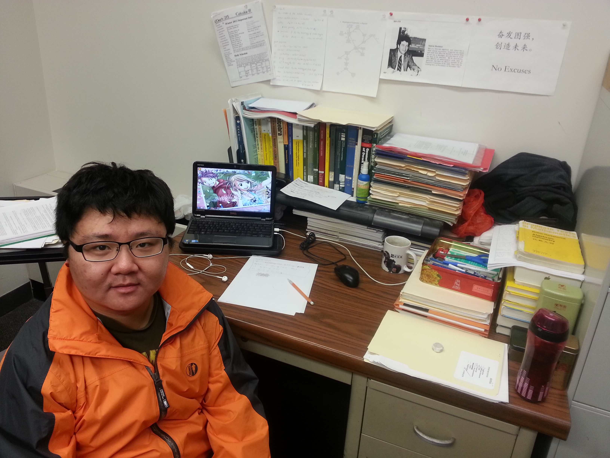

Linquan Ma
ma326@purdue.edu
Office: Math 740
Office Phone: 765 49-41956
I am a Professor of mathematics at
Purdue University. I obtained my Ph.D in May 2014 at the University of Michigan under the direction of
Mel Hochster. My research interests are commutative algebra and algebraic geometry. Here is my CV.
Papers and Preprints
- A short proof of Serre positivity, preliminary draft.
- Lech's conjecture in all characteristics, preliminary draft. (also see here for the equal characteristic case)
- Perfectoid pure and signature pairs (with Hanlin Cai, Anne Fayolle, Karl Schwede, Ilya Smirnov, Kevin Tucker and Joe Waldron).
- Counterexamples to Peskine-Szpiro's conjectures on modules of finite projective dimension.
- Local cohomological dimension and depth in mixed characteristic.
- Local cohomology modules with nonclosed support (with Bhargav Bhatt).
- Infinitely many associated primes of local cohomology modules of ramified regular local rings, Contemp. Math. (Special Volume celebrating 25 years of Kumunu), to appear.
- Ulrich modules over local rings of dimension two (with Srikanth Iyengar and Mark Walker), Vietnam J. Math. 55 (2027), no. 1, 241-255.
- Lech-Mumford constant and stability of local rings (with Ilya Smirnov).
- Perfectoid pure singularities (with Bhargav Bhatt, Zsolt Patakfalvi, Karl Schwede, Kevin Tucker, Joe Waldron and Jakub Witaszek). The Landscape of Commutative Algebra, Lecture Note Series of the London Mathematical Society, to appear.
- Test ideals in mixed characteristic: a unified theory up to perturbation (with Bhargav Bhatt, Zsolt Patakfalvi, Karl Schwede, Kevin Tucker, Joe Waldron and Jakub Witaszek, with an appendix by Rankeya Datta).
- Herzog ideals and F-singularities (with Alessandro De Stefani and Matteo Varbaro), J. Pure Appl. Algebra 230 (2026), no. 11, Paper No. 108404, 14 pp (Special Section celebrating the mathematical contributions of Jurgen Herzog).
- The Briancon-Skoda theorem for pseudo-rational and Du Bois singularities and uniformity in excellent rings (with Peter McDonald, Rebecca, R.G. and Karl Schwede), Forum Math. Pi 14 (2026), Paper No. e19, 24 pp.
- On complete integral closedness of the p-adic completion of absolute integral closure (with Raymond Heitmann), J. Algebra 694 (2026), 245-262.
- Lim Cohen-Macaulay sequences of modules (with Bhargav Bhatt and Mel Hochster), J. Reine Angew. Math. 835 (2026), 111-169 (Bicentennial Volume of Crelle's Journal).
- Colength, multiplicity, and ideal closure operations II (with Pham Hung Quy and Ilya Smirnov), Michigan Math. J. 76 (2026), no. 3, 451-480.
- Perfectoid signature, perfectoid Hilbert-Kunz multiplicity, and an application to local fundamental groups (with Hanlin Cai, Seungsu Lee, Karl Schwede and Kevin Tucker), Invent. Math. 244 (2026), no. 2, 357-454. (Perfectoid signature and applications, Oberwolfach Report 6/2023, 338-339.)
- An introduction to singularities in commutative algebra via perfectoid big Cohen-Macaulay algebras (with Kevin Tucker), Lectures on tight closure and its applications, 245-275, Contemp. Math., 831, Amer. Math. Soc., [Providence], RI, 2025. (A short proof of the direct summand theorem via the flatness lemma, unpublished note).
- Non-existence of Ulrich modules over Cohen-Macaulay local rings (with Srikanth Iyengar, Mark Walker and Ziquan Zhuang), Commun. Am. Math. Soc. 5 (2025), 195-208.
- Vanishing and non-negativity of the first normal Hilbert coefficient (with Pham Hung Quy), Acta Math. Vietnam 49 (2024), no. 3, 311-325 (special issue dedicated to Ngo Viet Trung).
- Regularity, singularities and h-vector of graded algebras (with Hailong Dao and Matteo Varbaro), Trans. Amer. Math. Soc. 377 (2024), no. 3, 2149-2167.
- Lim Ulrich sequences and Boij-Soderberg cones (with Srikanth Iyengar and Mark Walker), Forum Math. Sigma 11 (2023), Paper No. e115, 26 pp.
- Uniform Lech's inequality (with Ilya Smirnov), Proc. Amer. Math. Soc. 151 (2023), no. 6, 2387-2397.
- Globally +-regular varieties and the minimal model program for threefolds in mixed characteristic (with Bhargav Bhatt, Zsolt Patakfalvi, Karl Schwede, Kevin Tucker, Joe Waldron and Jakub Witaszek), Publ. Math. Inst. Hautes Etudes Sci., 138 (2023), 69-227.
- Lim Ulrich sequences and Lech's conjecture, Invent. Math. 231 (2023), no. 1, 407-429.
- Symbolic power containments in singular rings in positive characteristic (with Eloisa Grifo and Karl Schwede), Manuscripta Math. 170 (2023), no. 3-4, 471-496.
- A Buchsbaum theory for tight closure (with Pham Hung Quy), Trans. Amer. Math. Soc. 375 (2022), no. 11, 8257-8276.
- Multiplicities and Betti numbers in local algebra via lim Ulrich points (with Srikanth Iyengar and Mark Walker), Algebra Number Theory 16 (2022), no. 5, 1213-1257.
- F-stable secondary representations and deformation of F-injectivity (with Alessandro De Stefani), Acta Math. Vietnam. 47 (2022), no. 1, 141-150 (special issue dedicated to Nguyen Tu Cuong).
- An analog of adjoint ideals and PLT singularities in mixed characteristic (with Karl Schwede, Kevin Tucker, Joe Waldron and Jakub Witaszek), J. Algebraic Geom. 31 (2022), no. 3, 497-559.
- Maximal Cohen-Macaulay complexes and their uses: a partial survey (with Srikanth Iyengar, Karl Schwede and Mark Walker), Commutative Algebra, 475-500, Springer, Cham, 2021 (dedicated to David Eisenbud).
- Koszul and local cohomology, and a question of Dutta (with Anurag Singh and Uli Walther), Math. Z. 298 (2021), no. 1-2, 697-711.
- Covers of rational double points in mixed characteristic (with Javier Carvajal-Rojas, Thomas Polstra, Karl Schwede and Kevin Tucker), J. Singul. 23 (2021), 127-150.
- Singularities in mixed characteristic via perfectoid big Cohen-Macaulay algebras (with Karl Schwede), Duke Math. J. 170 (2021), no. 13, 2815-2890.
- Cohomologically full rings (with Hailong Dao and Alessandro De Stefani), Int. Math. Res. Not. IMRN 2021, no. 17, 13508-13545.
- Extended plus closure in complete local rings (with Raymond Heitmann), J. Algebra 571 (2021), 134-150 (special issue dedicated to Craig Huneke).
- Asymptotic Lech's inequality (with Craig Huneke, Pham Hung Quy and Ilya Smirnov), Adv. Math. 372 (2020), 107296, 33 pp.
- Filter regular sequence under small perturbations (with Pham Hung Quy and Ilya Smirnov), Math. Ann. 378 (2020), no. 1-2, 243-254.
- Colength, multiplicity, and ideal closure operations (with Pham Hung Quy and Ilya Smirnov), Comm. Algebra 48 (2020), no. 4, 1601-1607.
- A Kunz-type characterization of regular rings via alterations (with Karl Schwede), J. Pure Appl. Algebra 224 (2020), no. 3, 1124-1131.
- Recent applications of p-adic methods to commutative algebra (with Karl Schwede), Notices Amer. Math. Soc. 66 (2019), no. 6, 820-831.
- F-signature under birational morphisms (with Thomas Polstra, Karl Schwede and Kevin Tucker), Forum Math. Sigma 7 (2019), e11, 20 pp.
- Lech's inequality, the Stuckrad-Vogel conjecture, and uniform behavior of Koszul homology (with Patricia Klein, Pham Hung Quy, Ilya Smirnov and Yongwei Yao), Adv. Math., 347 (2019), 442-472. (Lech's inequality and the Stuckrad-Vogel conjecture, Oberwolfach Report 6/2019, 428-429.)
- Regular rings and perfect(oid) algebras (with Bhargav Bhatt and Srikanth Iyengar), Comm. Algebra 47 (2019), no. 6, 2367-2383 (special issue dedicated to Gennady Lyubeznik).
- Maximal Cohen-Macaulay modules over certain Segre products, Comm. Algebra 47 (2019), no. 6, 2488-2493 (special issue dedicated to Gennady Lyubeznik).
- Perfectoid multiplier/test ideals in regular rings and bounds on symbolic powers (with Karl Schwede), Invent. Math. 214 (2018), no. 2, 913-955.
- Big Cohen-Macaulay algebras and the vanishing conjecture for maps of Tor in mixed characteristic (with Raymond Heitmann), Algebra Number Theory 12 (2018), no. 7, 1659-1674.
- D-module and F-module length of local cohomology modules (with Mordechai Katzman, Ilya Smirnov and Wenliang Zhang), Trans. Amer. Math. Soc. 370 (2018), no. 12, 8551-8580.
- F-singularities under generic linkage (with Janet Page, Rebecca R.G., William Taylor and Wenliang Zhang), J. Algebra 505 (2018), 194-210.
- Frobenius actions on local cohomology modules and deformation (with Pham Hung Quy), Nagoya Math. J. 232 (2018), 55-75.
- The dualizing complex of F-injective and Du Bois singularities (with Bhargav Bhatt and Karl Schwede), Math. Z. 288 (2018), no. 3-4, 1143-1155.
- The vanishing conjecture for maps of Tor and derived splinters, J. Eur. Math. Soc. (JEMS) 20 (2018), no. 2, 315-338.
- Lech's conjecture in dimension three, Adv. Math. 322 (2017), 940-970. (Lech's conjecture, Oberwolfach Report 57/2016, 3214-3216.)
- Local cohomology of Du Bois singularities and applications to families (with Karl Schwede and Kazuma Shimomoto), Compos. Math. 153 (2017), no. 10, 2147-2170.
- F-injectivity and Buchsbaum singularities, Math. Ann. 362 (2015), no. 1-2, 25-42.
- Eulerian graded D-modules (with Wenliang Zhang), Math. Res. Lett. 21 (2014), no. 1, 149-167.
- A sufficient condition for F-purity, J. Pure Appl. Algebra 218 (2014), 1179-1183.
- The category of F-modules has finite global dimension, J. Algebra 402 (2014), 1-20.
- Finiteness properties of local cohomology for F-pure local rings, Int. Math. Res. Not. IMRN 2014, no. 20, 5489-5509.
- The Frobenius endomorphism and multiplicities, Thesis, University of Michigan (2014).
Teaching
At Purdue University:
- Math 45000 Algebra Honors (Fall 2026, Fall 2024, Fall 2021, Fall 2020, Fall 2019).
- Math 35100 Elementary Linear Algebra (Spring 2025, Spring 2022).
- Math 69000 Topics in Commutative Algebra: Positive characteristic methods (Fall 2024, Spring 2021). Lecture notes: F-singularities: a commutative algebra approach (with Thomas Polstra), last updated 2026.
- Math 37500 Introduction to Discrete Mathematics (Spring 2023).
- Math 69000 Topics in Commutative Algebra: Complete intersections (Fall 2022).
- Math 69000 Topics in Commutative Algebra: Homological conjectures/theorems and perfectoid spaces (Spring 2020).
- Math 26500 Linear Algebra (Fall 2018, Spring 2015, Fall 2014).
At University of Utah:
- Math 7830 Topics in Commutative Algebra: Perfectoid spaces and the homological conjectures (Spring 2018).
- Math 2210 Calculus 3 (Fall 2017, Spring 2016).
- Math 2200 Introduction to Discrete Mathematics (Spring 2017, Fall 2016).
- Math 2250 Differential Equations and Linear Algebra (Fall 2015).
At University of Michigan:
- TA for the course on Fibonacci numbers for Michigan Math and Science Scholars (Summer 2014).
- TA for Math 215 Calculus 3 (Spring 2014, Fall 2013, Fall 2012, Spring 2012).
- Math 116 Calculus 2 (Spring 2011).
- Math 115 Calculus 1 (Spring 2010, Fall 2009).
- Math 105 Data, Functions & Graphs (Spring 2009, Fall 2008).
Miscellaneous
I have been doing some very fun Crosstalks with my friends. Check our performances if you are interested!